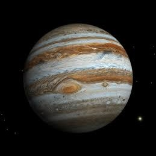

Јупитер — петтата планета од Сонцето и убедливо најголема во Сончевиот систем. Јупитер е 2.5 пати помасивен од сите други планети заедно, до толку што неговиот центар на маса со Сонцето всушност лежи над сончевата површина (1.068 соладни радии од центарот на сонцето). Тој е 318 пати помасивен од Земјата, со дијаметар 11 пати поголем од земјиниот, и со волумен 1300 пати поголем од земјиниот. Јупитер, истотака ротира најбрзо од сите планети во сончевиот систем. Комплетна ротација околу сопствената оска прави за нешто помалку од 10 часови.

Јупитер е составен од релативно мало карпесто јадро, опкружено со метален водород, опкружен со течен водород, кој пак е опкружен со гасен водород. Нема јасна граница меѓу трите агрегатни состојби на водородот - приближувајки се кон јадрото преодот од гас во течност е постепен. Јупитер во потесна смисла е составен од:H(90%)и од He(10%).
Јупитеровата атмосфера е составена од ~81% водород и ~18% хелиум, сметано по број на атоми. Атмосферата е ~75%/24% по маса; со ~1% од масата составен од други субстанции - внатрешноста содржи погусти материјали како на пример сооднос ~71%/24%/5%. Атмосферата содржи траги од метан, водена пара, амонјак, и "карпи". Има истотака, траги од јаглен, етан, водороден сулфат, неон, кислород, фосфин, и сулфур. Најнадворешните слоеви од атмосферата содржат кристали на замрзнат амонјак.Атмосферскиот состав е многу сличен на составот на сончевата маглина. Сатурн има сличен состав, но Уран и Нептун имаат многу помалку водород и хелиум.
Јупитер има тенок планетарен прстен составен од прашина што потекнува од неговите месечини при судир со метеори. Главниот прстен е создаден од прашина од сателитите Адреста и Метис. Два широки пофини прстени го опкружуваат главниот прстен, и потекнуваат од Тиб и Амалтеа. Истотака постои и многу тенок и оддалечен надворешен прстен што кружи околу Јупитер во обратна насока. Неговото потекло е непознато, и можеби е составен од меѓупланетарна прашина.
Дознај повеќе за Јупитер
| Апхел |
816520800 km (AU) |
| Перихел |
740573600 km (AU) |
| Голема полуоска |
778547200 km (AU) |
| Орбитален период |
4331.572 денови 11.85920 години |
| Ѕвезден период |
398,88 денови |
| Просечна орбитална брзина |
13.07 km/s |
| Познати сателити |
63 |